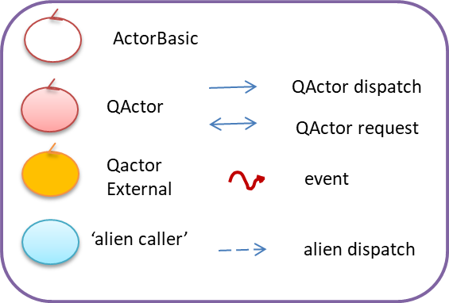
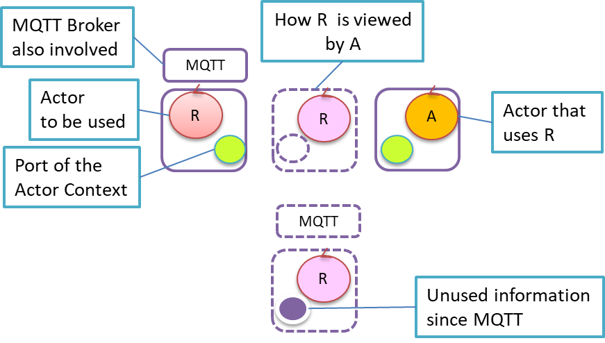
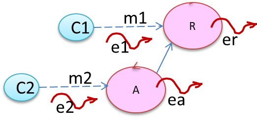

LabQakEvents2020 | Qak-event propagation
LabISS-lectures site
Let us introduce a 'Legenda' for our graphical models.
|  |
We say that a Qa-message (dispatch, event, ...) is :
- propagated via Context when it is sent along a context-to-context connection set by the qak-infrastrcuture;
- propagated via connection when it is sent (from an 'alien caller' to an actor) along the TCP-connection set by the caller with the
QActor context-server;
- propagated via proxy when it is sent (from an actor to a 'external caller' ) along a connection-proxy created on the QActor node.
|
Configurations
Let us suppose that a qak actor
A has to interact with another actor
R working in a different context and that such a context
makes use of the
+mqtt flag.
Now, interaction problems could arise when the description of the context of
R by
A is not identical to the original one.
In order to show the possible different cases, we will use the following notations:
|  |
Possible definitions related to R are:
Context ctxR ip [ host= "localhost" port= 8020 ] +mqtt
QActor R context ctxR { ... }
Possible definitions related to A are:
Context ctxR ip [ host= "localhost" port= 8020 ] +mqtt
Context ctxA ip [ host= "192.168.1.5" port= 8020 ]
External QActor R context ctxR
QActor A context ctxA { ... }
|
The different situations are summarized in the following pictures:
An example of these possible cases can be done with reference to the project
it.unibo.smartrobot2020
(see
Lab3_2020 | A smartrobot).
Rules
- The event emitted by a QActor that belongs to a qak-system (qasys) is propagated via Context to all the other QActor of qasys.
- The event emitted by a QActor of a qasys that
works as an ExternalQActor for other actors a1,...,an is also propagated via proxy to a1,...,an.
- The event that reaches a Context (since propagated from another Context or sent from an 'alien') is propagated only to the actors internal to that Context
|  |
A and R form a qak-system described by a unique model.
A and R could work in different Contexts.
- er (emitted by R) is propagated (via Context) to A and (via proxy) to C1 but not to C2
- ea (emitted by A) is propagated (via Context) to R and (via proxy) to C2 but not to C1
- e1 (generated by C1) is propagated (via connection) only to R
- e2 (generated by C2) is propagated (via connection) only to A
|
 |
A uses R as an ExternalQActor.
A 'knowns' the Context of R, but R does not know the Context of A.
- er (emitted by R) is propagated (via proxy) to A and to C1 but not to C2
- ea (emitted by A) is propagated (via connection) to R and (via proxy) to C2 but not to C1
- e1 (generated by C1) is propagated (via connection) only to R
- e2 (generated by C2) is propagated (via connection) only to A
|
Example
'Divide et impera' has its own drawbacks ...
 |
R,B belong to the same qak-system. R is External for A. A is External for B.
- e1 (generated by C1) is propagated (via connection) only to R
- er (emitted by R) is propagated (via Context) to B and (via proxy) to A,C1
- ea (emitted by A) is propagated (via connection) to R and (via proxy) to B
- eb (generated by B) is propagated (via connection) to A and (via Context) to R
Note that eb - when received (via connection in A from B - is not propagated from A to R.
Thus, R does receives eb just one time (from B).
|